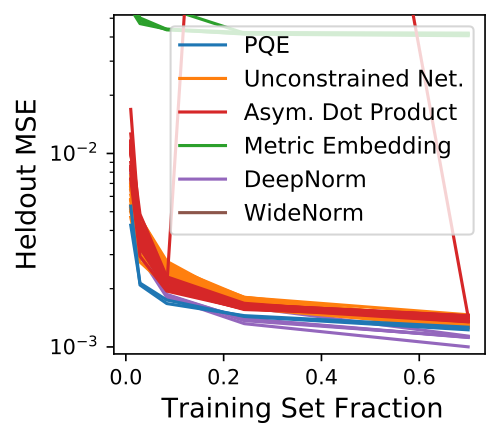
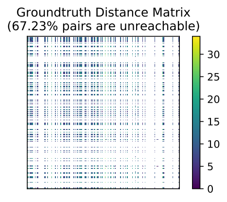
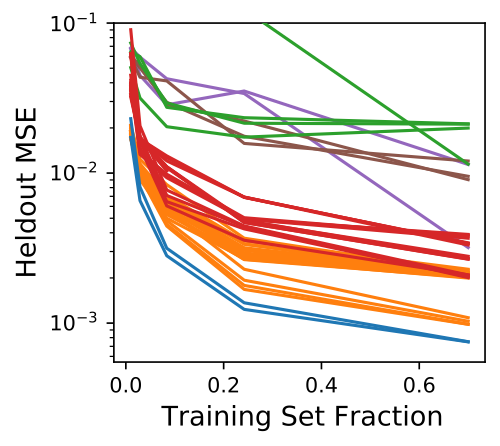
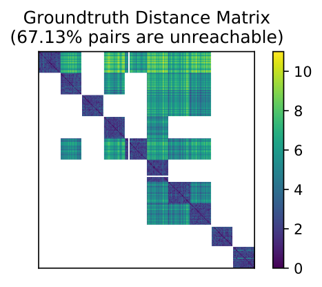
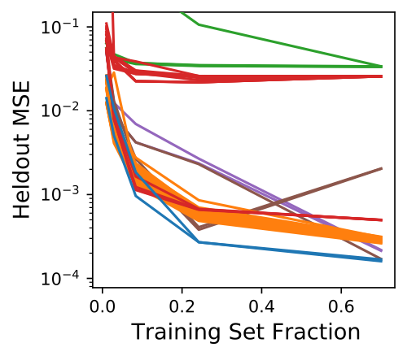
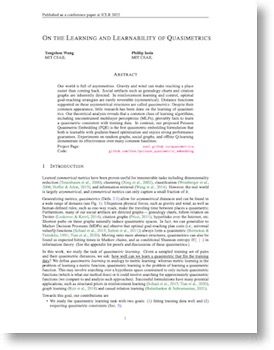

On the Learning and Learnablity of Quasimetrics
ICLR 2022
| Paper: | [arXiv] [OpenReview] |
| Code: | [GitHub] |
Abstract
Our world is full of asymmetries. Gravity and wind can make reaching a place easier than coming back. Social artifacts such as genealogy charts and citation graphs are inherently directed. In reinforcement learning and control, optimal goal-reaching strategies are rarely reversible (symmetrical). Distance functions supported on these asymmetrical structures are called quasimetrics. Despite their common appearance, little research has been done on the learning of quasimetrics.
Our theoretical analysis reveals that a common class of learning algorithms, including unconstrained multilayer perceptrons (MLPs), provably fails to learn a quasimetric consistent with training data. In contrast, our proposed Poisson Quasimetric Embedding (PQE) is the first quasimetric learning formulation that both is learnable with gradient-based optimization and enjoys strong performance guarantees. Experiments on random graphs, social graphs, and offline Q-learning demonstrate its effectiveness over many common baselines.
Quasimetric Learning: What and Why?
Quasimetric Learning is already an important part of many research works, including graph learning, causual relation learning, and reinforcement learning. Yet understanding and analyses of it are largely missing. Many observations remain unexplained, and there are few principles to guide empirical practices. In this work, we start to fill in this missing piece.
Three Approaches to Quasimetric Learning
Existing Approach 1: Search a relaxed hypothesis space for (approximate) quasimetrics
- E.g., training an
unconstrained neural network mapping concatenated input to a scalar output. - Common in practice.
Theoretical Insight: A large family of methods (including unconstrained networks)fail arbitrarily badly , either failing to fit the training set or far away from being a quasimetric. No (data-agnostic) generalization guarantees can hold.
Existing Approach 2: Search in an overly restricted hypothesis space that cannot approximate all quasimetrics
- E.g., training encoders to a latent space with metrics, or quasimetrics restricted to inducing some asymmetric norms.
- Exists in prior work.
- Also not proper for general Quasimetric Learning because of their
inability to fit arbitrary quasimetrics.
IDEAL Approach: Search in a space that approximates all quasimetrics and only quasimetrics
- No known prior work achieves this.
- Our proposed
Poisson Quasimetric Embedding (PQE) is such a method with theoretical guarantees. PQE is a family ofdifferentiable latent-space quasimetrics, usually associated with a jointly trained encoder.- One can play with PQEs using our PyTorch package, which includes the initialization and parameterization techniques discussed in the paper.
Empirically, Only PQEs Well Approximate Various Quasimetrics
Compared Methods:
Existing Approach 1: Unconstrained Networks, Dot Products of Asymmetrical Latent Spaces. (Both with possible triangle inequality regularizers)Existing Approach 2: Metric Embddings, DeepNorm, WideNorm.PQEs.
A Dense Quasimetric |
|

|
 |
A Sparse Quasimetric |
|
|  |  |
A Sparse Quasimetric With Block Structure |
|
|  |  |
|  |
PaperICLR 2022. OpenReview. arXiv 2206.15478. CitationTongzhou Wang, Phillip Isola. "On the Learning and Learnability of Quasimetrics" International Conference on Learning Representations (ICLR). 2022. Code: [GitHub] |
bibtex entry
@inproceedings{wang2022learning,
title={On the Learning and Learnability of Quasimetrics},
author={Wang, Tongzhou and Isola, Phillip},
booktitle={International Conference on Learning Representations},
year={2022}
}